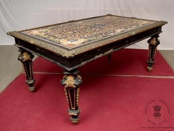
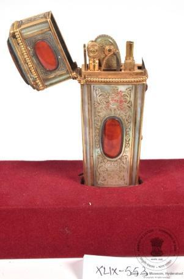
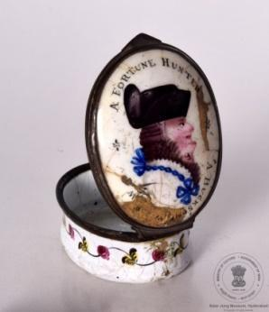
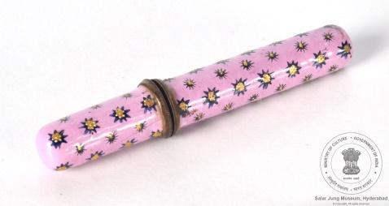
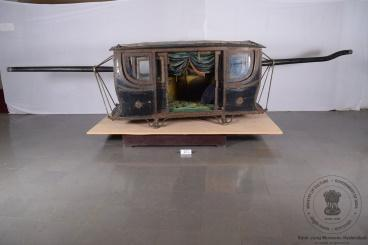
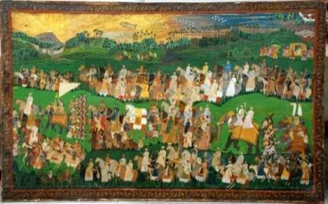
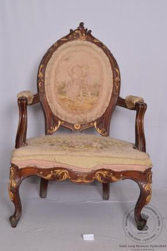
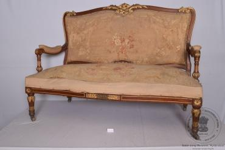
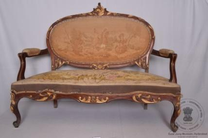

LII-193: Enamel Box
A Fortune Hunter / A Buxom Widow
A selection of Western furniture objects from the Salar Jung Museum, including enamel boxes, a papier-mache table, a writing desk, a cabinet, chairs, a clock, a mirror and a tea table.
सालार जंग संग्रहालय की पश्चिमी फर्नीचर दीर्घा से चयनित वस्तुओं में एनामेल के डिब्बे, पपीयर-माशे मेज, लेखन मेज, कैबिनेट, कुर्सियाँ, घड़ी, दर्पण और चाय की मेज शामिल हैं।
সালার জং মিউজিয়ামের পশ্চিমী ফার্নিচার গ্যালারি থেকে নির্বাচিত এনামেল বাক্স, প্যাপিয়ার-মাশে টেবিল, লেখার ডেস্ক, ক্যাবিনেট, চেয়ার, ঘড়ি, আয়না এবং চা টেবিল এখানে প্রদর্শিত হয়েছে।
સાલાર જંગ મ્યુઝિયમની પશ્ચિમી ફર્નિચર ગેલેરીમાંથી પસંદ કરાયેલા ઇનેમલ બૉક્સ, પેપર-માશે ટેબલ, લેખન ડેસ્ક, કેબિનેટ, ખુરશીઓ, ઘડિયાળ, અરીસો અને ચા ટેબલ અહીં રજૂ છે.
ಸಾಲಾರ್ ಜಂಗ್ ವಸ್ತುಸಂಗ್ರಹಾಲಯದ ಪಾಶ್ಚಿಮಾತ್ಯ ಪೀಠೋಪಕರಣ ಗ್ಯಾಲರಿಯಿಂದ ಆಯ್ದ ಎನಾಮೆಲ್ ಪೆಟ್ಟಿಗೆಗಳು, ಪೇಪಿಯರ್-ಮ್ಯಾಶೆ ಮೇಜು, ಬರವಣಿಗೆ ಮೇಜು, ಕ್ಯಾಬಿನೆಟ್, ಕುರ್ಚಿಗಳು, ಗಡಿಯಾರ, ಕನ್ನಡಿ ಮತ್ತು ಟೀ ಮೇಜುಗಳು ಇಲ್ಲಿವೆ.
സലാർ ജംഗ് മ്യൂസിയത്തിലെ വെസ്റ്റേൺ ഫർണിച്ചർ ഗാലറിയിൽ നിന്നുള്ള എനാമൽ പെട്ടികൾ, പേപ്പിയർ-മാഷെ മേശ, എഴുത്തുമേശ, കാബിനറ്റ്, കസേരകൾ, ഘടികാരം, കണ്ണാടി, ടീ മേശ എന്നിവ ഇവിടെ പ്രദർശിപ്പിച്ചിരിക്കുന്നു.
सालार जंग संग्रहालयाच्या वेस्टर्न फर्निचर गॅलरीमधील मीनाकाम केलेल्या पेट्या, पेपर-माशे टेबल, लेखन डेस्क, कपाट, खुर्च्या, घड्याळ, आरसा आणि चहाचे टेबल येथे सादर केले आहेत.
ସାଲାର୍ ଜଙ୍ଗ୍ ସଂଗ୍ରହାଳୟର ପାଶ୍ଚାତ୍ୟ ଫର୍ନିଚର୍ ଗ୍ୟାଲେରୀରୁ ମନୋନୀତ ଏନାମେଲ୍ ବାକ୍ସ, ପେପିଅର୍-ମାଶେ ଟେବୁଲ୍, ଲେଖା ଡେସ୍କ୍, କ୍ୟାବିନେଟ୍, ଚେୟାର୍, ଘଡ଼ି, ଦର୍ପଣ ଏବଂ ଚା ଟେବୁଲ୍ ଏଠାରେ ରହିଛି।
సాలార్ జంగ్ మ్యూజియంలోని పాశ్చాత్య ఫర్నిచర్ గ్యాలరీ నుండి ఎంపిక చేసిన ఎనామెల్ పెట్టెలు, పేపియర్-మాచే టేబుల్, రైటింగ్ డెస్క్, క్యాబినెట్, కుర్చీలు, గడియారం, అద్దం మరియు టీ టేబుల్ ఇక్కడ ఉన్నాయి.
சாலார் ஜங் அருங்காட்சியகத்தின் மேற்கத்திய மரச்சாமான்கள் அரங்கில் இருந்து தேர்ந்தெடுக்கப்பட்ட எனாமல் பெட்டிகள், பேப்பியர்-மாஷே மேசை, எழுதும் மேசை, அலமாரி, நாற்காலிகள், கடிகாரம், கண்ணாடி மற்றும் தேநீர் மேசை ஆகியவை இங்கு இடம்பெற்றுள்ளன.
سالار جنگ میوزیم کی مغربی فرنیچر گیلری سے منتخب کیے گئے اینامل کے ڈبے، پیپر ماشے کی میز، تحریری میز، کیبنٹ، کرسیاں، گھڑی، آئینہ اور چائے کی میز یہاں پیش کی گئی ہیں۔

A Fortune Hunter / A Buxom Widow

Cylindrical enamel container

Decorative Western furniture

Western writing furniture

Decorative storage cabinet

European-style furniture

Decorative timepiece

Decorative mirror

Western occasional furniture